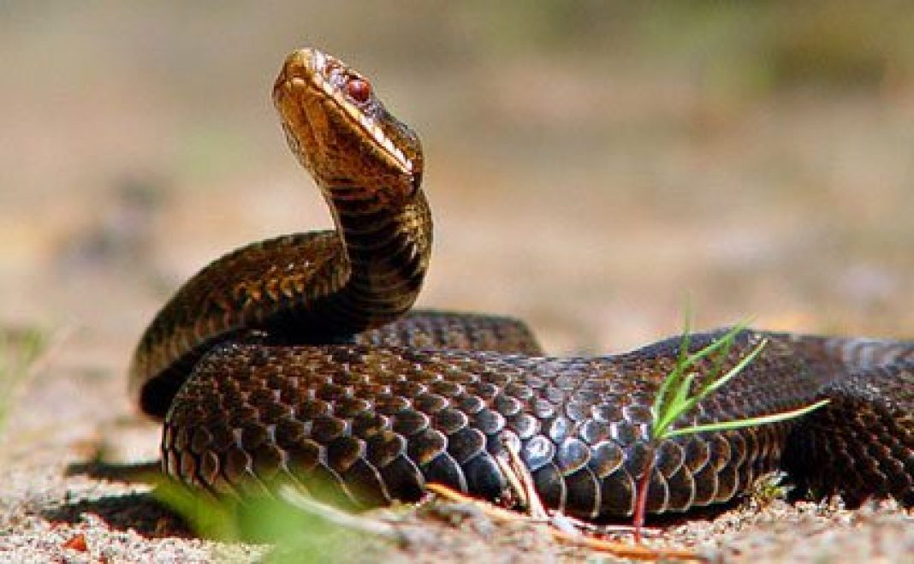

Dəri
İlan dərisi pulcuqlarla örtülüdür, hamar və quru quruluşa malikdir. İlanların qarın və bel pulcuqlarının quruluşu fərqlidir. Dəri rəngləri çox müxtəlidir. Bəziləri bir rəngə, bəziləri isə 3–4 rəngə sahibdir. Rəngli ilanlar, əsasən, zəhərlidir. Ancaq zəhərli olmayan rəngli ilanlar da var. Rəngli dəri təhlükəni bildirir və düşmənləri qorxutmaq üçün istifadə olunur, amma bu o demək deyil ki, birrəngli ilanların dəriləri qorunmaq üçün əlverişsizdir. Birrəngli ilanların rəngi daha çox bozumtul, qəhvəyi və qara rəngli olur ki, bu rənglər də torpaqda, qumda, daşda gizlənmək üçün (kamuflyaj) ideal rənglərdir.
Zəhər
Zəhər başın arxasındakı zəhər vəzilərində toplanır və dişlər vasitəsilə ova, yaxud düşmənə yeridilir. Tüpürən kobra kimi bir neçə ilan təhlükə hiss etdikdə düşmənin gözünə zəhər tüpürür. Bəzi heyvanlarda ilan zəhərinə qarşı təbii peyvənd vardır və zəhər onlara təsir etmir.
